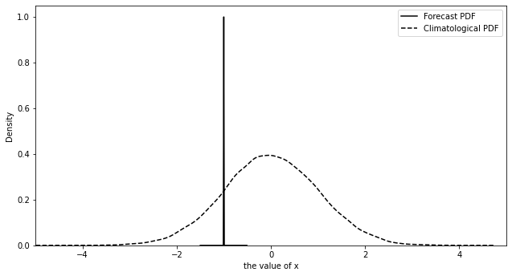
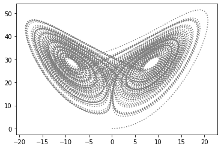
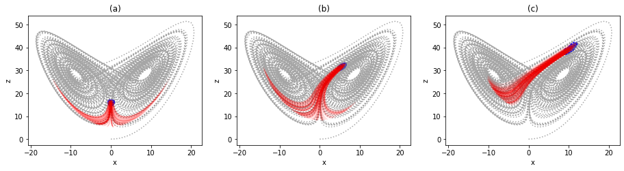
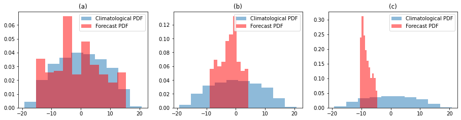

import numpy as np
import matplotlib.pyplot as plt
from sklearn.decomposition import PCA
from netCDF4 import Dataset as NetCDFFile
import random
import timeit
import pickle
from scipy import stats
import xarray as xr
import pandas as pd
import statistics
from scipy import interpolate
from scipy import signal
import os
from google.colab import drive
drive.mount('/content/drive')
---------------------------------------------------------------------------
ModuleNotFoundError Traceback (most recent call last)
Cell In[1], line 3
1 import numpy as np
2 import matplotlib.pyplot as plt
----> 3 from sklearn.decomposition import PCA
4 from netCDF4 import Dataset as NetCDFFile
5 import random
ModuleNotFoundError: No module named 'sklearn'
f=plt.figure()
imp = signal.unit_impulse(100, 'mid')
plt.plot(np.arange(-0.5, 0.5,0.01)-1, imp, 'k',label='Forecast PDF')
from numpy import random
import matplotlib.pyplot as plt
import seaborn as sns
sns.distplot(random.normal(size=30000), kde_kws={'linestyle':'--'},hist=False, label='Climatological PDF',color='k')
plt.xlim([-5,5])
plt.xlabel('the value of x')
plt.legend()
f.set_size_inches(10.5,5.5)
f.savefig( "/content/drive/MyDrive/website-hugo/chaos_and_predictability/week1/FIG1.png")
/usr/local/lib/python3.7/dist-packages/seaborn/distributions.py:2619: FutureWarning: `distplot` is a deprecated function and will be removed in a future version. Please adapt your code to use either `displot` (a figure-level function with similar flexibility) or `kdeplot` (an axes-level function for kernel density plots).
warnings.warn(msg, FutureWarning)

# RK4 for Lorenz 63 model
# using RK4 to derive the data for training
# function to be solved
def f(y,sigma,rho,beta):
dy = np.zeros(np.shape(y))
dy[0] = sigma*(y[1]-y[0])
dy[1] = y[0]*(rho-y[2])
dy[2] = y[0]*y[1]-beta*y[2]
return dy
# or
# f = lambda x: x+y
# RK-4 method
def rk4(x0,y0,xn,n,sigma,rho,beta):
# Calculating step size
h = (xn-x0)/n
#print('\n--------SOLUTION--------')
#print('-------------------------')
#print('x0\ty0\tyn')
#print('-------------------------')
for i in range(n):
k1 = h * (f(y0,sigma,rho,beta))
k2 = h * (f((y0+k1/2),sigma,rho,beta))
k3 = h * (f((y0+k2/2),sigma,rho,beta))
k4 = h * (f((y0+k3),sigma,rho,beta))
k = (k1+2*k2+2*k3+k4)/6
yn = y0 + k
#print('%.4f\t%.4f\t%.4f'% (x0,y0,yn) )
#print('-------------------------')
y0 = yn
x0 = x0+h
return yn
#print('\nAt x=%.4f, y=%.4f' %(xn,yn))
# Inputs
print('Enter initial conditions:')
x0 = 0
y0 = [0,0.1,0]
rho = 28.0
sigma = 10.0
beta = 8.0 / 3.0
y_record = np.zeros((3,50000))
print('Enter calculation point: ')
xn = 0.01
print('Enter number of steps:')
step = 100
y_record[:,0] = y0
# RK4 method call
for i in range(1,np.shape(y_record)[1]):
y_record[:,i] = rk4(x0,y_record[:,i-1],xn,step, sigma,rho,beta)
Enter initial conditions:
Enter calculation point:
Enter number of steps:
plt.figure()
plt.plot(y_record[0,0:10000],y_record[2,0:10000],color='gray',linestyle='dotted')
[<matplotlib.lines.Line2D at 0x7f51f0c3a950>]

def rmse(y1,y2):
dy = (y1-y2)**2
dy = np.sum(dy)
return dy
dy = np.zeros((50000))
for i in range(50000):
dy[i] = rmse(y_record[:,i],[0,0,16])
np.min(dy)
0.029147957326795586
fig=plt.figure()
plt.subplot(1,3,1)
dy = np.zeros((50000))
for i in range(50000):
dy[i] = rmse(y_record[:,i],[0,0,16])
np.min(dy)
posi1 = np.squeeze(np.where(dy<np.percentile(dy,0.5)))
plt.plot(y_record[0,0:10000],y_record[2,0:10000],color='gray',linestyle='dotted',alpha=0.7)
for i in range(np.size(posi1)-1):
plt.plot(y_record[0,posi1[i]:posi1[i]+40],y_record[2,posi1[i]:posi1[i]+40],color='red',alpha=0.05)
plt.scatter(y_record[0,posi1],y_record[2,posi1],color='blue',s=2)
plt.title('(a)')
plt.xlabel('x')
plt.ylabel('z')
plt.subplot(1,3,2)
dy = np.zeros((50000))
for i in range(50000):
dy[i] = rmse(y_record[:,i],[5,-1,32])
np.min(dy)
posi2 = np.squeeze(np.where(dy<np.percentile(dy,0.5)))
plt.plot(y_record[0,0:10000],y_record[2,0:10000],color='gray',linestyle='dotted',alpha=0.7)
for i in range(np.size(posi2)-1):
plt.plot(y_record[0,posi2[i]:posi2[i]+50],y_record[2,posi2[i]:posi2[i]+50],color='red',alpha=0.05)
plt.scatter(y_record[0,posi2],y_record[2,posi2],color='blue',s=2)
plt.title('(b)')
plt.xlabel('x')
plt.ylabel('z')
plt.subplot(1,3,3)
dy = np.zeros((50000))
for i in range(50000):
dy[i] = rmse(y_record[:,i],[10,-1,40])
np.min(dy)
posi3 = np.squeeze(np.where(dy<np.percentile(dy,0.5)))
plt.plot(y_record[0,0:10000],y_record[2,0:10000],color='gray',linestyle='dotted',alpha=0.7)
for i in range(np.size(posi3)-1):
plt.plot(y_record[0,posi3[i]:posi3[i]+40],y_record[2,posi3[i]:posi3[i]+40],color='red',alpha=0.05)
plt.scatter(y_record[0,posi3],y_record[2,posi3],color='blue',s=2)
plt.title('(c)')
plt.xlabel('x')
plt.ylabel('z')
fig.set_size_inches(15.5, 3.5)
fig.savefig( "/content/drive/MyDrive/website-hugo/chaos_and_predictability/week1/FIG2.png", dpi=300, bbox_inches='tight')

fig=plt.figure()
plt.subplot(1,3,1)
plt.hist(y_record[0,:],density=True,alpha=0.5, label='Climatological PDF')
plt.hist(y_record[0,posi1[0:-20]+40],density=True,alpha=0.5,color='r', label='Forecast PDF')
plt.legend()
plt.title('(a)')
plt.subplot(1,3,2)
plt.hist(y_record[0,:],density=True,alpha=0.5, label='Climatological PDF')
plt.hist(y_record[0,posi2[0:-20]+40],density=True,alpha=0.5,color='r', label='Forecast PDF')
plt.legend()
plt.title('(b)')
plt.subplot(1,3,3)
plt.hist(y_record[0,:],density=True,alpha=0.5, label='Climatological PDF')
plt.hist(y_record[0,posi3[0:-20]+40],density=True,alpha=0.5,color='r', label='Forecast PDF')
fig.set_size_inches(15.5, 3.5)
plt.legend()
plt.title('(c)')
fig.savefig( "/content/drive/MyDrive/website-hugo/chaos_and_predictability/week1/FIG3.png", dpi=300, bbox_inches='tight')
